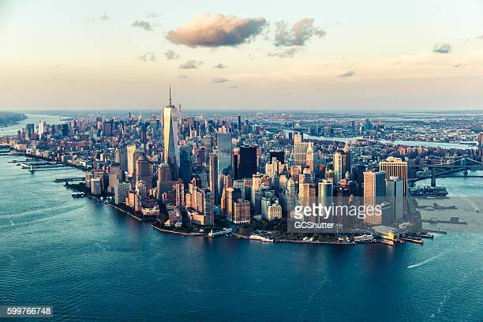

Destinos
-
Paris

Paris é a capital e a mais populosa cidade da França, com uma população estimada em 2020 de 2 148 271 habitantes em uma área de 105 quilômetros quadrados. Desde o século XVII, Paris é um dos principais centros de finanças, diplomacia, comércio, moda, ciência e artes da Europa. A cidade de Paris é o centro e sede de governo da região administrativa de Ilha de França, que tem uma população estimada em 2020 de 12 278 210 habitantes, ou cerca de 18% da população da França.
Saiba mais -
Tóquio

Tóquio é a capital do Japão e sede do governo nacional. É considerada uma das maiores metrópoles do planeta e também o centro político, econômico, educacional e cultural do Japão. A metrópole representa uma das áreas de maior aglomeração urbana do mundo. A metrópole é constituída por 23 bairros, 26 municípios adicionais e as ilhas Izu e Ogasawara.
Saiba mais -
Nova Iorque
Nova Iorque, oficialmente Cidade de Nova Iorque, é a cidade mais populosa do estado de Nova Iorque e dos Estados Unidos.Sua região metropolitana é uma das áreas metropolitanas mais populosas do mundo e é também a terceira cidade mais populosa da América, atrás de São Paulo e Cidade do México. A cidade exerce um impacto significativo sobre o comércio, finanças, mídia, arte, moda, pesquisa, tecnologia, educação e entretenimento de todo o planeta.
Saiba mais
Roteiros
-
Roteiro de Paris
Começando pelo ponto alto, literalmente, da sua viagem, vale muito a pena encarar a fila para subir no segundo e no último degrau da Torre Eiffel, que tem mais de 300 metros de altura no total. Além de visitar um dos pontos turísticos mais famosos do mundo, você ainda terá uma visão panorâmica de tirar o fôlego.Também vale subir os vários degraus até o topo do Arco do Triunfo, monumento idealizado por Napoleão Bonaparte para celebrar a glória dos heróis de guerra. Recuperado o fôlego, suba também até a Basílica de Sacre Coeur, aquela toda branca e que pode ser vista de vários pontos da cidade. A vista panorâmica neste ponto é de tirar o fôlego.
Outra Igreja que vale a visita é a Catedral Notre Dame. Além de conferir sua arquitetura gótica e incrível, não deixe de conferir de perto as gárgulas, criaturas de pedras que habitam o topo da igreja. Também vale ver de pertinho os belíssimos vitrais da Saint Chapelle.
Uma viagem a Paris só estará completa com uma ida ao Museu do Louvre, que tem um dos acervos mais importantes do mundo. O lugar conta com mais de 30 mil obras e, por isso, facilmente você gastará um dia inteiro entre os vários corredores do Louvre. Entre suas obras mais importantes estão a Mona Lisa, de Leonardo da Vinci, e a escultura da Vênus de Milo. Também merece destaque a ala dedicada à cultura egípcia.
No quesito jardins, Paris é campeã. A cidade sabe cultivar muito bem seus espaços verdes. Aproveite para curtir um finalzinho de tarde e fazer um piquenique no Jardin des Tuileries, pertinho do Museu do Louvre, e no maravilhoso Jardin de Luxembourg.
Uma das avenidas mais imponentes da Europa, a Champs Élysées é um convite à caminhada. Conhecida pelos franceses como “uma das avenidas mais belas do mundo” é um dos pontos muito movimentados da cidade. Com mais de 1910 metros, além de grifes caras e vários restaurantes, a Champs Élysées abriga a loja da Ladurée, famosa pelos macarons.
Torre Montparnasse é uma atração que normalmente não entra nos roteiros convencionais de viagem a Paris, mas que vale muito a pena. Do alto de seus 210 metros de alturas, o visitante vai encontrar uma vista privilegiada (e de 360 graus) da cidade. Aproveite o pôr do sol por aqui.
Saiba mais -
Roteiro de Tóquio
Visitar Shibuya e atravessar o cruzamento mais famoso do mundo. Shibuya é um bairros mais movimentados de Tóquio, é lá que fica um dos cruzamentos mais famosos do mundo. Quando 8 semáforos se fecham ao mesmo tempo e o caos organizado se instaura e as 5 faixas de pedestres viram uma passarela.
Harajuku é o grande reduto da cultura pop japonesa em Tóquio. É lá que você vai achar a galera fazendo os melhores cosplays do mundo de um lado e as ultra fashionistas do outro. E no meio disso um mundo de animes, músicas, cores, luzes pulsantes e comidas pensadas meticulosamente para ficarem lindas no Instagram. Na verdade, tudo em Harajuku é instagramável.
O santuário é um templo xintoísta que fica em Harajuku e é dedicado ao Imperador Meiji e sua esposa, a imperatriz Shoken. O imperador é conhecido por ter quebrado o isolamento do Japão com o mundo no século 19 e dado os primeiros passos no desenvolvimento do país. O templo foi fundado em 1920, entretanto foi completamente destruído pelos bombardeios durante a Segunda Guerra Mundial. Felizmente foi reconstruído em 1958 com a ajuda de doações que vieram de diversos cantos do mundo.
O Templo Asakusa é o principal de Tóquio, é lá que acontecem as grandes celebrações religiosas da cidade e onde uma centena de japoneses vão todos os dias. Some a isso mais uma multidão de turistas e assim temos um dos lugares mais cheios de Tóquio em datas especiais.
Akiharaba ou simplesmente Akiba para os íntimos é um distrito que pertence ao imenso bairro de Chiyoda. Entretanto, o bairro é famoso em todo o mundo por ser a meca dos produtos eletrônicos e novidades tecnológicas em Tóquio.
Visitar o Templo Asakusa, o mais famoso de Tóquio. Estando em Tóquio, não dá pra deixar de visitar um autêntico jardim japonês. O Hamarikyu Gardens fica dentro da cidade, não distante da Tokyo Station. O jardim fica na margem da Baía de Tóquio e tem lagos de água salgada, que mudam de nível com o vai e vem das marés e uma tradicional casa de chás em uma das ilhas.
Saiba mais -
Roteiro de Nova Iorque
A Times Square é o ponto turístico mais visitado da cidade. Ela tem, de fato, a cara de Nova York: além de ter de tudo um pouco e gente de todo o mundo, os imensos painéis publicitários reluzentes mostram que a cidade funciona no ritmo 24/7. O fluxo super intenso de pessoas, a rua toda iluminada pelas publicidades e a escadaria.
O Central Park também não pode ficar de fora do seu roteiro Nova York. Ele é a maior área verde da cidade e um local incrível para caminhar, andar de bicicleta, fazer um piquenique, pegar sol e tirar fotos linda. Há muito o que se fazer por lá, são vários pontos turísticos dentro do Central Park. Por exemplo, existe uma fonte super famosa, a Bathesda Fountain, um jardim em homenagem ao escritor Shakespeare, uma estátua de bronze da Alice no País das Maravilhas, um calçadão em homenagem à John Lennon, uma ponte linda que atravessa um lago.
Apesar de não ser o prédio mais alto de Nova York, o Empire State Building com certeza merece um lugar na sua agenda. Isso porque é o edifício é um dos símbolos da cidade, estando presente em muitos filmes e séries, como o King Kong. Não deixe de colocar uma ida ao observatório do Empire State na sua lista de o que fazer em Nova York em 3 dias. A vista da cidade é linda e no por do sol a imagem que fica é uma daquelas que você quer guardar na lembrança pra sempre.
A cidade é palco de 3 dos mais importantes museus do mundo! São eles: o The American Museum of Natural History, o The Museum of Modern Art (também conhecido como MoMA) e o The Metropolitan Museum of Art (também conhecido como MET). Embora sejam propostas super diferentes, você pode escolher um deles para visitar. O Museu de História Natural conta com exposições que contam amis sobre a evolução dos povos e dos animais. Enquanto isso, o MoMA tem como foco arte contemporânea e moderna, como Andy Warhol e Van Gogh. Já o MET é mais conhecido por sua tradição histórica, com uma coleção que inclui obras de até cinco mil anos e outros nomes famosos, como Monet e Picasso.
Linda, famosa e gratuita, a Brooklyn Bridge é praticamente um monumento. Considerada uma das pontes de suspensão mais antigas dos EUA, ela tem um pouco mais de 1,5km de extensão e você pode (e deve) atravessa-la a pé. A Brooklyn Bridge liga Manhattan ao Brooklyn e ao cruza-la, você terá a oportunidade de ver o skyline de Manhattan. Toda a travessia é gratuita e rende ótimas fotos! Nossa dica é que você vá bem cedinho para pegar a ponte mais vazia e conseguir fotos incríveis.
Claro que a Estátua da Liberdade não pode ficar de fora do seu roteiro Nova York. Afinal, ela também é um dos grandes símbolos da cidade e representa a liberdade e independência do povo estadunidense. A Estátua não fica em Manhattan, na verdade, ela está localizada em uma ilha próxima, chamada Liberty Island. Você pode optar por fazer um passeio de barco que passe ao redor da estátua sem desembarcar na ilha ou pode comprar o passeio com desembarque na Liberty Island.
Saiba mais
Dicas de Viagem
-
Não esqueça de um adaptador de tomadas e carregadores de eletrônicos
Comprar um carregador de celular, de notebook ou de bateria de câmera pode custar uma fortuna nos aeroportos ou pode fazer você perder tempo procurando (enquanto você poderia estar conhecendo a cidade). Antes de viajar, confira também os padrões de tomadas do destino e já leve tudo conforme a sua necessidade. De preferência, coloque esses itens na mala de mão. -
Leve um kit completo de primeiras necessidades na mala de mão
Leve pequenos lanches e água, tapa-olhos, protetor de ouvido (essencial!), fones de ouvido e, caso o voo seja muito longo, roupas de baixo, remédios que você pode vir a usar no voo, escova de dentes e pasta de dentes. -
Contrate um seguro de viagem
Sempre faça um seguro de viagem! Parece óbvio, mas muitas pessoas não se incomodam com isso e acabam perdendo muito dinheiro quando as coisas dão errado… -
Leve uma garrafa plástica de água vazia
Vazia, a garrafa passa tranquilamente pelo raio-x e você evita pagar altos preços pela água das salas de embarque. A maioria dos aeroportos pelo mundo tem um bebedouro (geralmente próximo ao banheiro) onde você pode encher a sua garrafinha. -
Não leve muito dinheiro vivo
Há caixas eletrônicos em quase todas as cidades do mundo, então não há realmente nenhuma necessidade de transportar uma quantia a mais do que você precisa para alguns dias. Confira as taxas do seu banco para saque internacional e tente viajar com menos dinheiro em mãos. -
Escolha refeições vegetarianas
Evite alimentos gordurosos ou pesados (para evitar indigestão). Além disso, esse é o tipo de refeição de maior qualidade durante um voo, já que é feito em porções menores. Fica a dica.